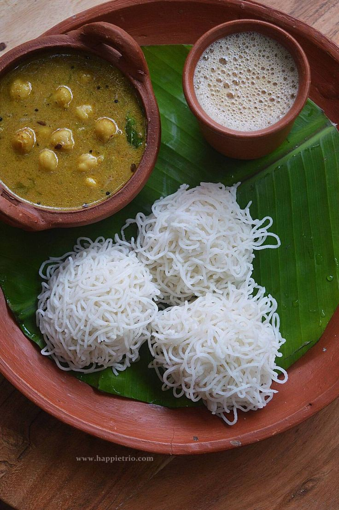
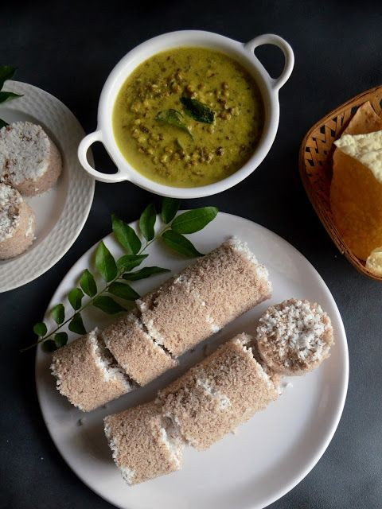
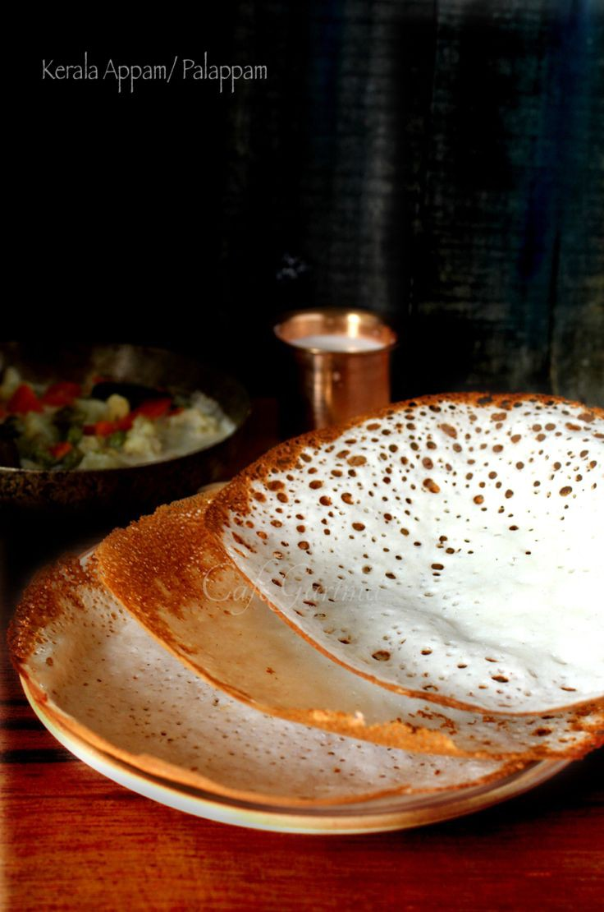
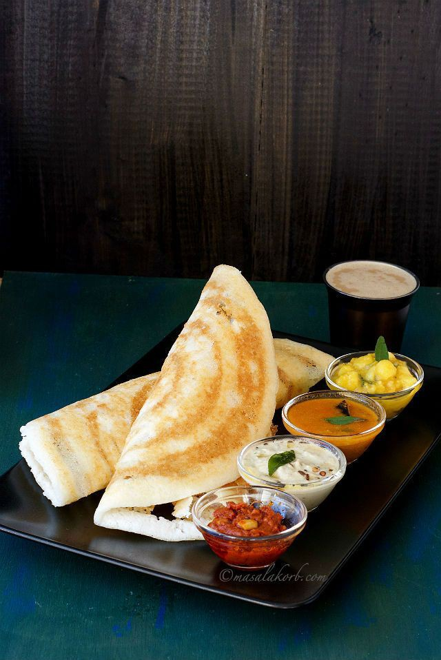

Puttu and kadala curry

Spices have always played an integral part of Kerala's history. Our food is an example of the very same and we have offerings for people from all over the world. Be it famous international restaurant chains or local eateries, we have everything a foodie could ask for prepared with that special Kerala taste to it. The cuisine here caters to vegetarians and non-vegetarians alike. Let the flavours of our past and our future take you on a delightful journey.

Idiyappam with curry |

Puttu and kadala curry |
|
|---|---|---|
Ela Sadya |
||

Appam with ishtu |

Ghee roast dosa |